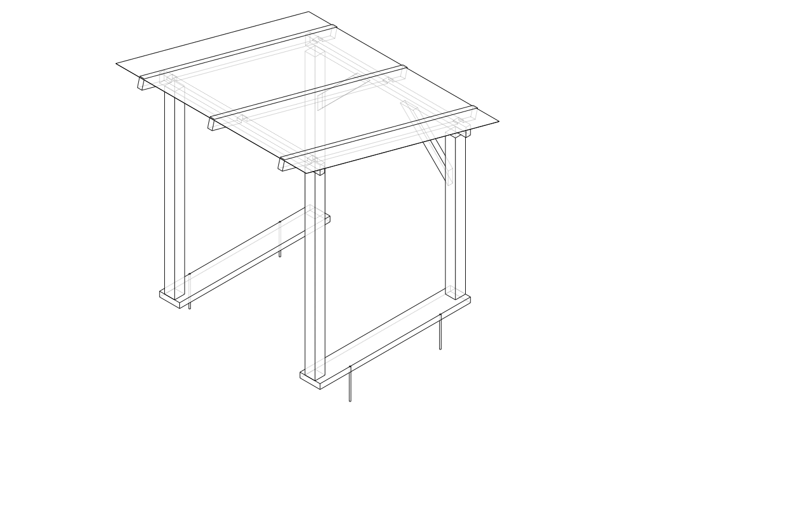
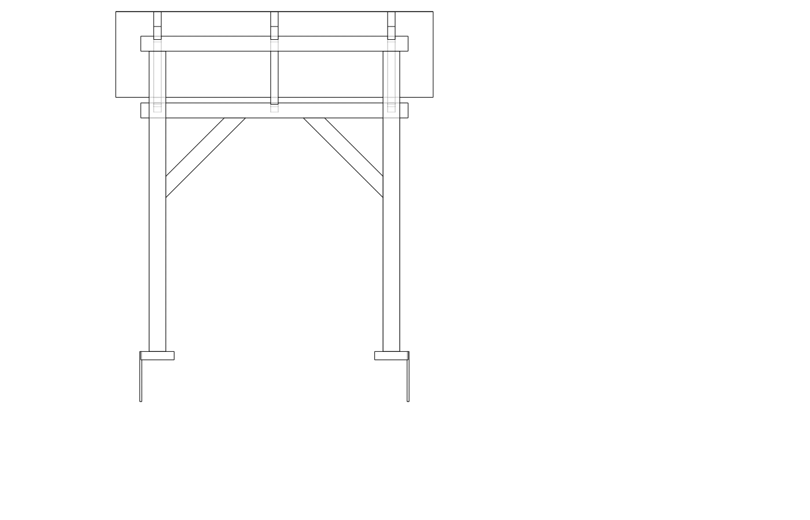
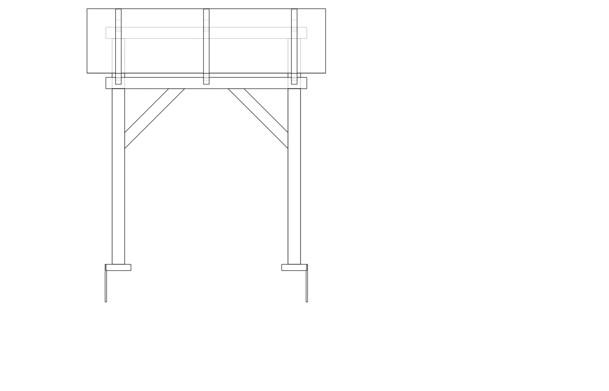
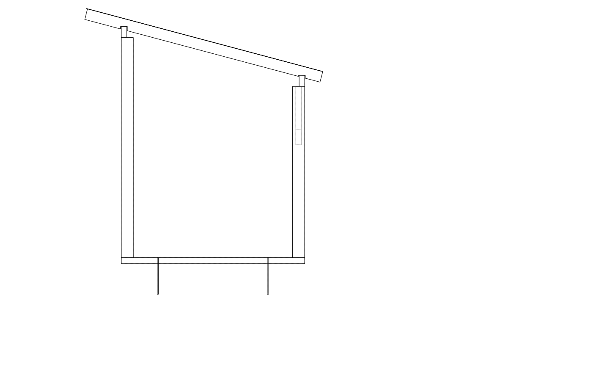
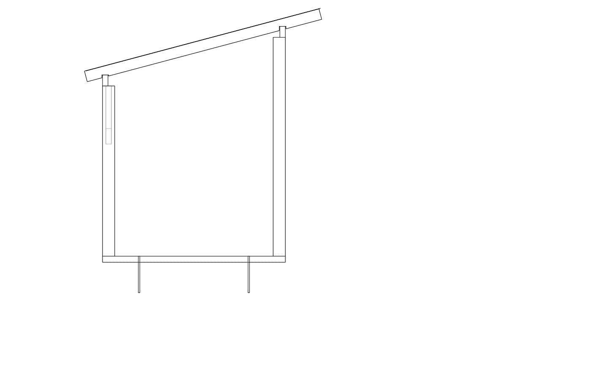
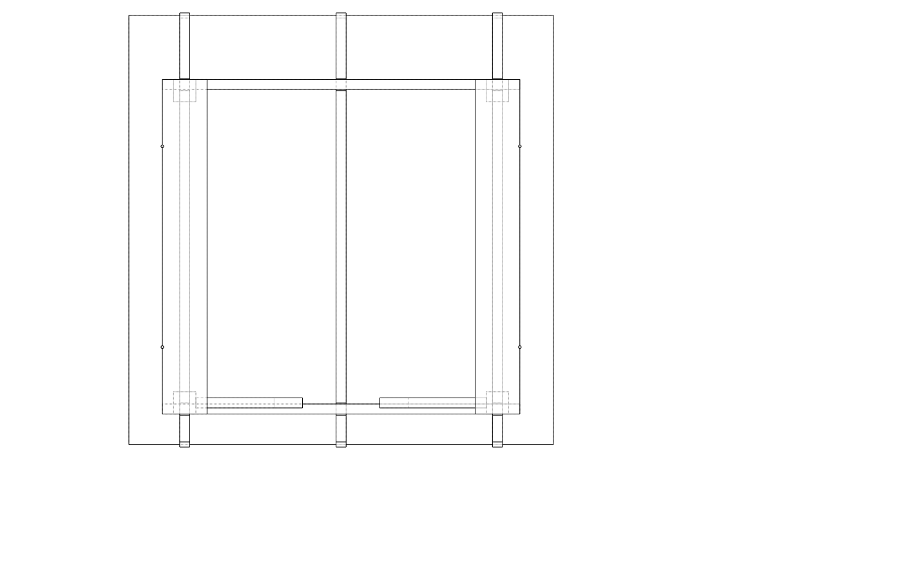

| Item | Qty | Unit | Unit price | Subtotal |
|---|---|---|---|---|
| H4 sleepers 200×50 | 3 | meters | $10.95 | $32.85 |
| H4 posts 100×100×2400 (front posts) | 2 | each | $26.52 | $53.04 |
| H4 posts 100×100×1800 (back posts) | 2 | each | $21.87 | $43.74 |
| 90×45 CCA treated pine (plates rafters noggins) | 10.5 | meters | $9.30 | $97.65 |
| 75×75 galv angle brackets | 8 | each | $11.32 | $90.56 |
| 10mm rebar 300mm pegs | 4 | each | $4.59 | $18.36 |
| Roofing screws hex head 65mm box/100 | 1 | box | $32.00 | $32.00 |
| Joist hanger nails 40mm 1kg box | 1 | box | $16.00 | $16.00 |
| Coach screws M10×100 (sleeper-to-rebar tie-down, optional) | 4 | each | $3.50 | $14.00 |
| Rough-sawn paling 100×18mm×1500mm (vertical back wall cladding) | 0 | each | $0.00 | $0.00 |
| Corrugated roofing iron 810×3300mm sheet | 3 | each | $76.98 | $230.94 |
| Total | $629.14 | |||
Sized for 3.0 m³ of firewood
(3 rows × 1400 mm = 4.2 m linear stacking length;
target 3.8 m at 1.6 m high × 0.5 m deep stacks).
| Part | Qty | L (mm) | W (mm) | T (mm) | Notes |
|---|---|---|---|---|---|
| Sleeper | 2 | 1500 | 200 | 50 | H4 treated |
| Front post | 2 | 1800 | 100 | 100 | H4 treated |
| Back post | 2 | 1400 | 100 | 100 | H4 treated |
| Front wall plate | 1 | 1600 | 45 | 90 | 90×45 CCA pine, laid flat (90 mm vertical) |
| Back wall plate | 1 | 1600 | 45 | 90 | 90×45 CCA pine, laid flat |
| Rafter | 3 | 1991 | 45 | 90 | Along-slope length; 90×45 CCA pine |
| Knee brace | 2 | 675 | 90 | 45 | 90×45 CCA pine; 45° cuts both ends; one per upper rear post corner |
| Roof sheet | 3 | 3300 | 810 | — | Corrugated iron; cover width ~760 mm lapped |
Rafter along-slope length = √(1950² + 400²) ≈ 1991 mm. Cut a birdsmouth notch 30 mm deep × 55 mm seat at each plate bearing point.
Knee braces: 675 mm long at 45°; 2 total (one per upper rear post corner). No housing required — face-fix with 2× 90 mm structural screws per end.
Set out the site — Mark the 1500 × 1600 mm footprint with string lines. Check square by measuring diagonals (should match). Confirm the ground is reasonably level; pack low spots if needed.
Position sleepers — Lay the 2 sleepers parallel, running front-to-back (1500 mm direction), at 1400 mm centre-to-centre. Outermost sleeper faces are 1600 mm apart. Check they are level with each other; use a long level and packing.
Drive rebar pegs — Drive rebar pegs tight against the outer sleeper faces (2 pegs per side, at 300 mm from each end) and at the front and back ends of each interior sleeper. 4 pegs total. Leave ~50 mm proud. Confirm sleepers cannot shift.
Cut posts to length — Cut 2 front posts to 1800 mm and 2 back posts to 1400 mm. Treat cut ends with H4 end-grain preservative. Label F (front) and B (back).
Erect and plumb posts — Stand each post on the centreline of its sleeper at the front and back edges. Brace temporarily, check plumb on two faces. Fix with 75 × 75 galv angle brackets (2 per post base, one each side). Toe-nail through bracket with 40 mm joist hanger nails.
Fix front wall plate — Cut the 1600 mm front plate from 90 × 45. Rest it flat (90 mm vertical) on top of the 2 front posts, flush with the outer sleeper faces. Clamp, level, then fix with 2 × angle brackets per post. The plate overhangs 100 mm each side of the outer posts.
Fix back wall plate — Repeat for the back plate on the 2 back posts. The back plate sits 400 mm lower than the front — this creates the 14.9° skillion slope. Confirm the height difference at each post pair before fixing.
Cut and fix rafters — Cut 3 rafters to 1991 mm (along-slope). Cut a birdsmouth notch (30 mm deep × 55 mm seat) at each end where the rafter will cross the plate. Place one rafter directly above each post, with 1 intermediate per bay at 700 mm spacing. Seat each rafter into its birdsmouth notch with 300 mm overhang at the front and 150 mm at the rear. Fix with 2× 90 mm structural screws toe-screwed at ~30° through rafter into plate at each end.
(No noggins — knee braces provide back-wall stability. Skip to step 10.)
Fix back-wall knee braces — Cut 2 knee braces to 675 mm from 90×45 CCA pine. Mark 45° on each face at both ends and crosscut. Fix one brace at each upper inside corner of the rear posts: two 90 mm structural screws through each brace end into the post face and plate face. No housing required.
Fix roof sheeting — Lay 3 × 810 × 3300 mm corrugated iron sheets across the rafters, starting from the low (rear) end and lapping each sheet over the one below. Lap sheets 1.5 corrugations side-to-side. Fix with 65 mm hex-head roofing screws into every rafter through the crown of the corrugation.
Final checks and treatment — Apply timber preservative to any untreated cut ends. Check all brackets are fully nailed/screwed. Verify the roof slopes away from the stack (water runs to the back). Clear offcuts and stack the firewood.
Knee brace fixing — drive 2× 90 mm TimberLok or similar structural screws per end face. Predrill if using hardwood; treated pine typically fine without.
Modular extension — the shelter is designed to add bays later. When extending, splice new plate sections over the new post and continue roof sheets sideways. The extension-side of the current build should be left without a fascia board.